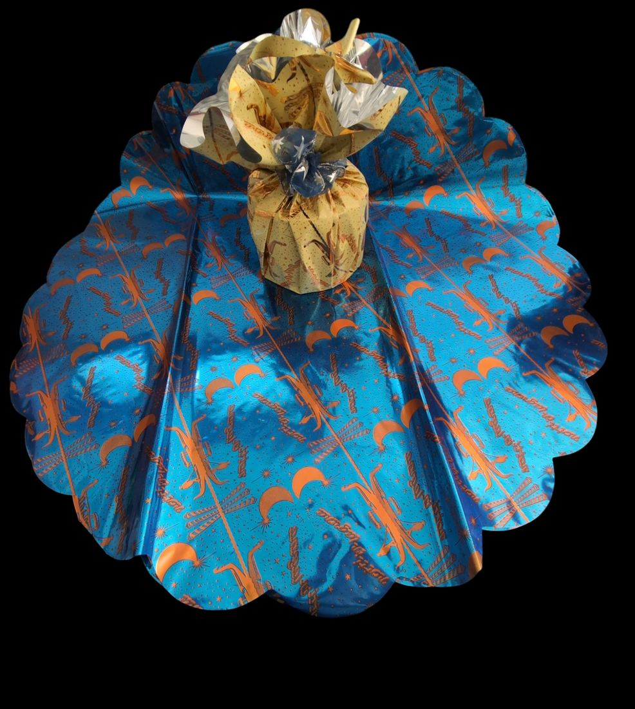

Cellofan e prodotti tradizionali
Il Cellofan è il film con cui siamo nati, nel 1958. Lo trasformiamo ancora in fogli, dischi, sacchetti e truciolo.
Per industria dolciaria, pasticcerie, gastronomie, cantine e fioristi.
- Fogli in Cellofan per il twisting di caramelle, cioccolatini e confetti
- Truciolo di Cellofan neutro e colorato per ceste natalizie e cassette di vino
- Dischi in Cellofan e polipropilene per hamburger e per chiudere le damigiane
- Sacchetti trasparenti termosaldabili e colorati con barriera UV per il vino
- Fogli, rotoli monopiega, buste e tubolare argentato per fioristi
- Incarti stampati per panettoni, pandori, colombe e uova di Pasqua